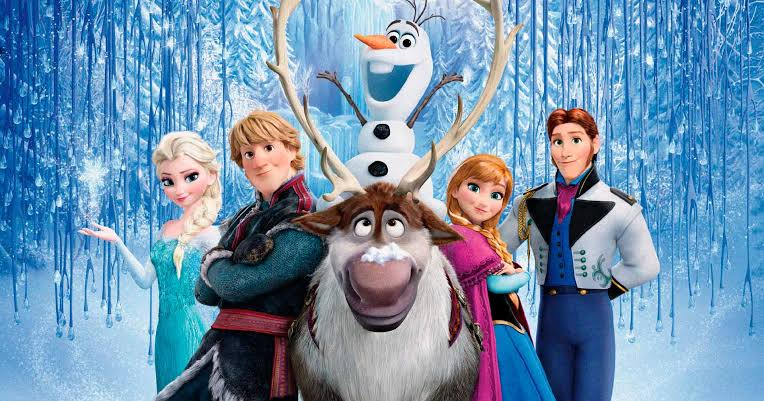

Sobre o filme

Frozen - Uma Aventura Congelante é uma animação da Disney lançada em 2013. A história acompanha as irmãs Anna e Elsa, duas princesas do reino de Arendelle.
Elsa possui o poder de controlar o gelo e a neve, mas durante sua coroação seus poderes acabam sendo revelados. Com medo de machucar outras pessoas, ela foge para as montanhas e cria um enorme inverno em Arendelle.
Anna decide procurar sua irmã e trazê-la de volta para casa. Durante sua jornada, ela conhece Kristoff, sua rena Sven e o divertido boneco de neve Olaf.
Resumo
A história mostra a importância da família, do amor e da aceitação. Ao longo da aventura, Anna e Elsa aprendem a compreender seus sentimentos e percebem que o amor entre irmãs pode superar grandes dificuldades.
Curiosidades
- O filme foi lançado em 2013.
- Elsa e Anna são irmãs.
- Olaf é um boneco de neve.
- Sven é uma rena.
- A história se passa principalmente no reino de Arendelle.